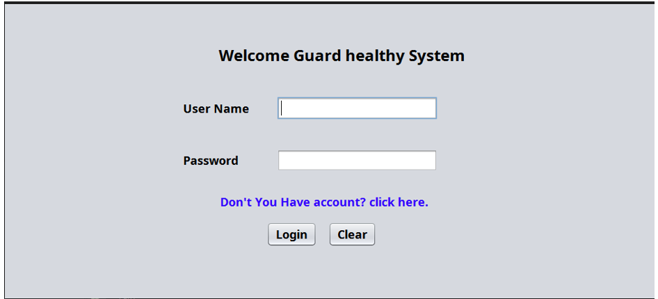
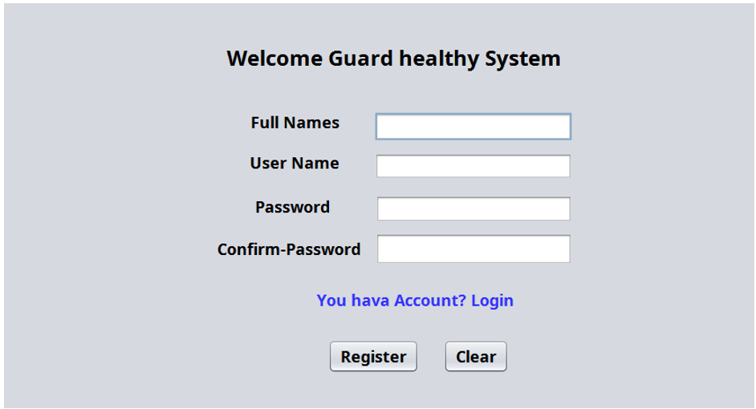
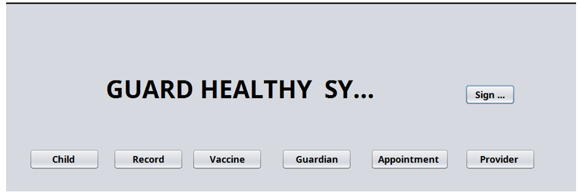
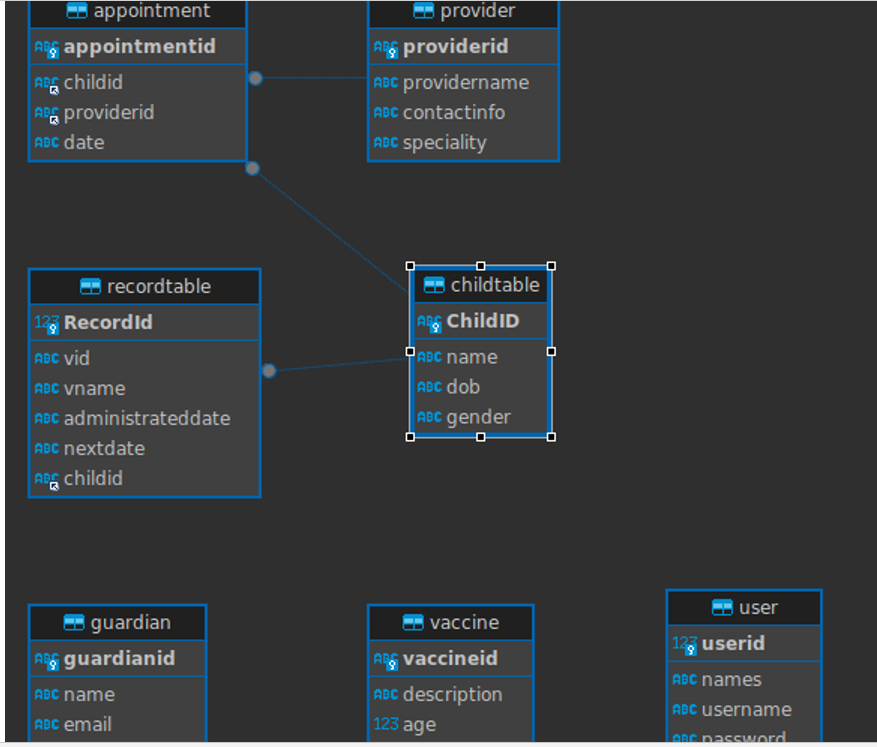
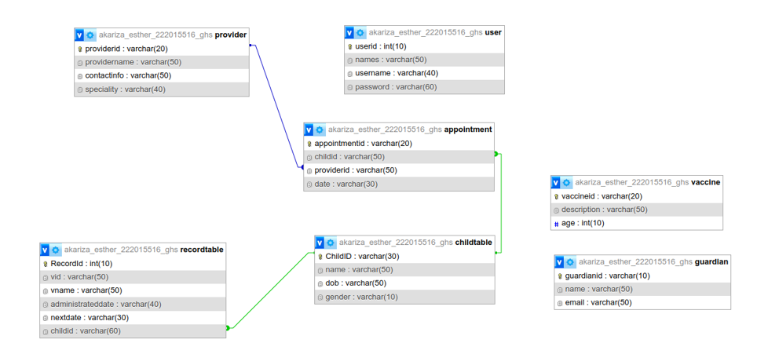

User Authentication
The Guard Health System Administration aims to streamline healthcare management practices by leveraging technology to meet the dynamic demands of the healthcare sector. By providing a comprehensive platform for managing all aspects of healthcare operations, from patient management to appointment scheduling, the system empowers administrators to focus on providing high-quality patient care while efficiently managing administrative tasks. With intuitive interfaces and user-friendly functionalities, the system ensures ease of use for all stakeholders, fostering collaboration and synergy among healthcare providers, staff, patients, and guardians. Through continuous innovation and adaptation to emerging healthcare trends, the system endeavors to drive excellence in healthcare delivery.
1. System Login: The system login provides a secure gateway for authorized users to access the Guard Health System Administration by verifying their identity through unique identifiers, such as usernames and passwords.
2. System Registration: The system registration process allows individuals to create new accounts within the Guard Health System Administration by providing necessary information and credentials. This enables users to access various features and functionalities tailored to their roles within the healthcare institution.
Admin Dashboard Description
The Admin Dashboard serves as the central control hub for managing the Guard Health System Administration. From here, administrators can oversee various aspects of healthcare management, including patient management, appointment scheduling, vaccine tracking, guardian management, and provider management. This intuitive interface empowers administrators with the tools they need to efficiently manage day-to-day operations within the healthcare institution.

Admin Dashboard Links:
- Patients Page Link: This link redirects the administrator to the dedicated page for managing patients within the system.
- Appointments Page Link: Clicking on this link takes the administrator to the appointment management section of the system.
- Vaccine Page Link: This link allows administrators to track and manage vaccine information within the system.
- Guardians Page Link: Clicking on this link redirects the administrator to the guardian management section of the system.
- Providers Page Link: This link takes the administrator to the provider management section of the system.
Patients Management Description
The Patients Management Page provides administrators with comprehensive access to all patient-related information within the Guard Health System Administration. This page serves as a centralized platform for viewing, updating, adding, and deleting patient records. Administrators can also utilize search functionality to quickly locate specific patient records based on various criteria. Additionally, the page offers options for updating existing patient information, adding new patients to the system, and removing outdated or inactive profiles, ensuring efficient and effective patient management.
Database Description
The Guard Health System Administration relies on a structured database to manage various aspects of healthcare operations. Below are the key database tables and their relationships:
 